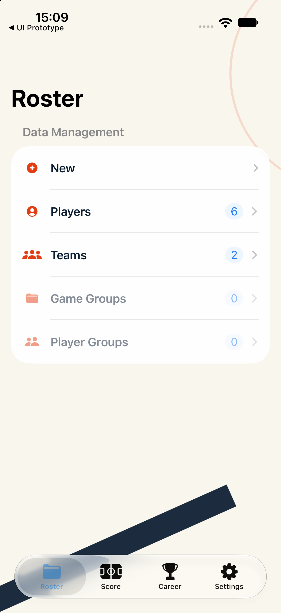
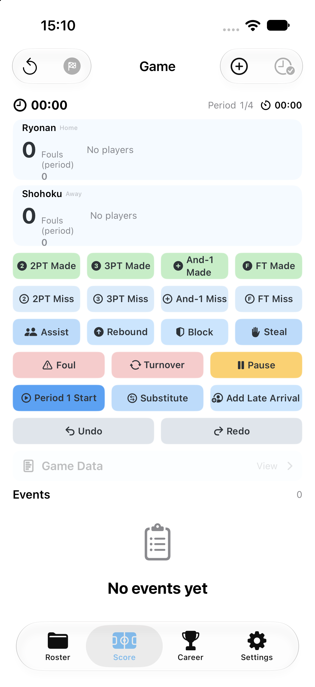
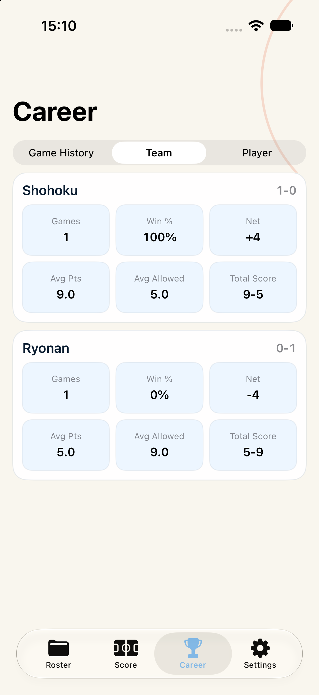
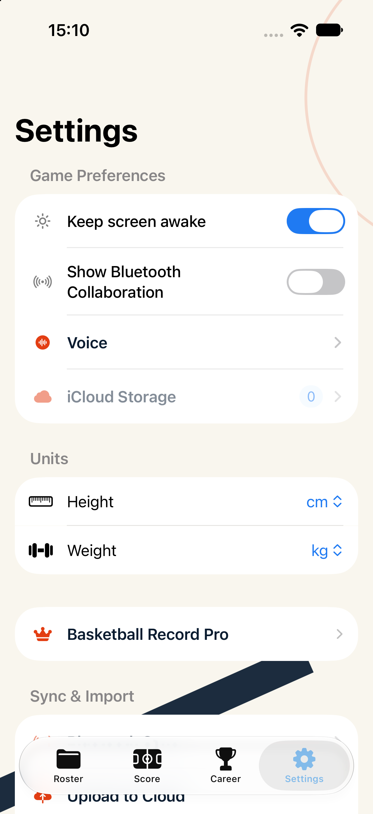

现有 App 页面基线截图
设备：iPhone 17 · iOS 27.0 · 1206×2622 · UDID F7F6F3E8-AA77-4FC4-A65B-8BDA2CA78E92
构建：xcodebuild Debug 成功；每页通过 -screenshotTab 0/1/2/3 启动，等待 5 秒后截图。
本轮没有清除模拟器数据，没有修改产品代码。记分页只作保护边界，不进入设计候选。




当前页面结构观察
- 顶层为四项 Tab：Roster、Score、Career、Settings。
- 管理页为标题、分组副标题、五行数据管理列表、底部导航。
- 生涯页为标题、分段选择、球队统计卡片。
- 设置页为多个分组列表，包含开关、单位选择、同步入口。